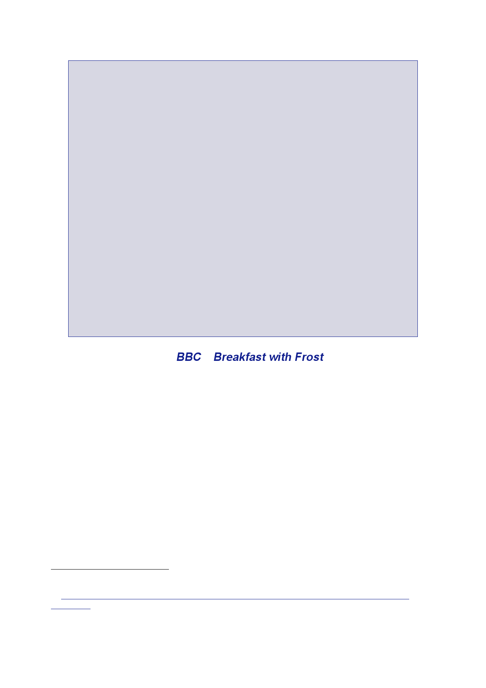

3.6 |
Development of UK strategy and options, November 2002 to January
2003
the Vice
President of Iraq, (characterised by INDICT as the “second most
powerful man
in Iraq”).234
All were
alleged to have committed offences of hostage‑taking in
1990.
Lord Goldsmith
wrote to Ms Clwyd on 24 January 2003.235
He stated
that he was
not
prepared to consent to a prosecution on the “theoretical
possibility” that Saddam
Hussein’s
“current immunity could at some point lapse” particularly, in the
light of
the
Yerodia236
decision
which implied that the formal grant of his consent might
itself
contravene
the basis of his immunity. Lord Goldsmith was not satisfied,
moreover, that
the evidence
submitted by INDICT provided a realistic prospect of
conviction.
Lord Goldsmith
did not express a view as to whether Tariq Aziz might continue to
enjoy
immunity.
In his case, and with regard to Ali Hassan Al‑Majid and Taha
Ramadan, he did
not
consider the evidence to be sufficiently cogent or persuasive for
there to be a realistic
prospect of
a conviction and Lord Goldsmith refused consent in each
case.
Lord Goldsmith
closed his letter with the following paragraph:
“My
conclusions on the material provided, focus only on the question of
exercising
criminal
jurisdiction against individuals in the domestic courts. They have
nothing
to do, of
course, with the quite separate question of whether the
international
community
may in due course consider it worthwhile to establish an
international
tribunal,
depending on how the international situation develops. An
international
tribunal
can be set up on a basis that overrides Sovereign immunity. But
this is not
a matter
for me and it would not be right for me to speculate as to how the
situation
will
develop over the next few weeks or months.”
680.
Mr Blair
decided to use an interview on Breakfast
with Frost on 26
January
to set out
the position that the inspections should be given sufficient time
to
determine
whether or not Saddam Hussein was co‑operating fully. If he
was
not, that
would be a sufficient reason for military action. A find of WMD
was
not required.
681.
In an extended
interview on the BBC’s
Breakfast with
Frost programme
on
26 January,
Mr Blair set out in detail his position on
Iraq.237
682.
Asked whether
Dr Blix should be given more time, Mr Blair stated that
the
inspectors
had “to be given the time to do the job”, but there was “confusion”
about what
that job
was. The time they needed was to certify whether Saddam Hussein was
“fully
co‑operating
or not”. Saddam had to provide information on “exactly what
weapons
material”
he had, “allowing the inspectors to inspect it, monitor it and shut
it down”.
If they
were not able to do that job, Saddam would have to be disarmed by
force. That
should not
take months, but Saddam was not co‑operating.
234
Note
Montgomery, 25 September 2002, ‘In the Matter of Iraqi Crimes
Against Humanity’.
235
Letter
Goldsmith to Clwyd, 24 January 2003, ‘Saddam Hussein, Tariq Aziz,
Ali Hassan and Taha
Ramadan’.
236
Democratic
Republic of Congo v Belgium ICJ, 14 February 2002.
237
BBC, 26
January 2003, Breakfast
with Frost.
121